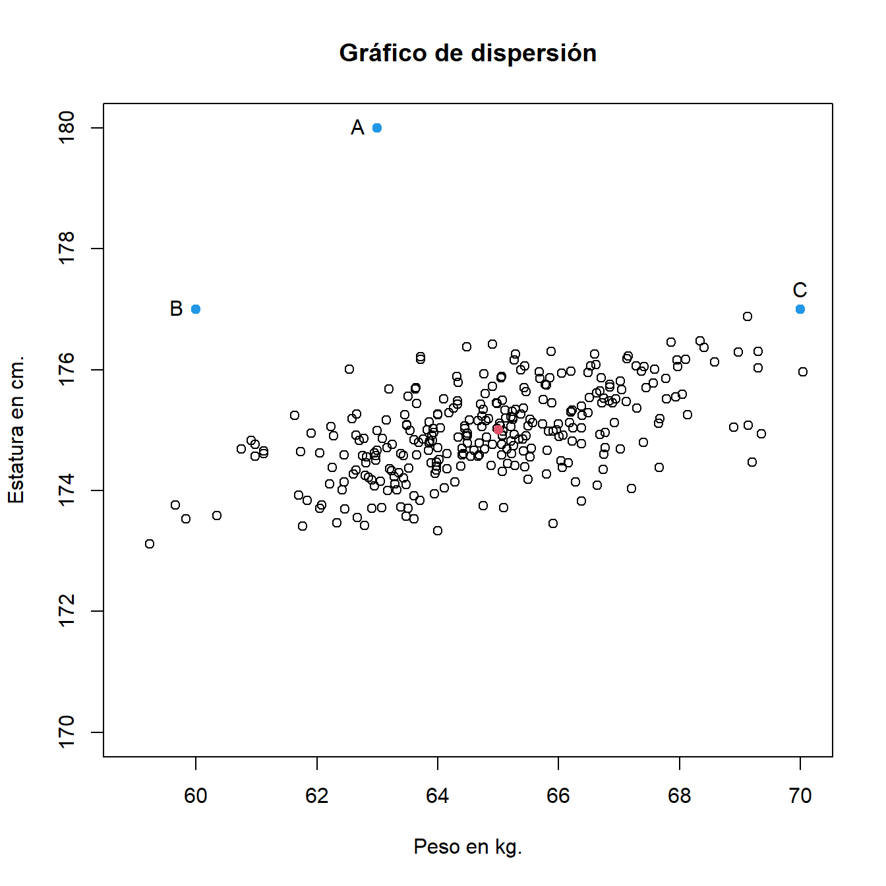
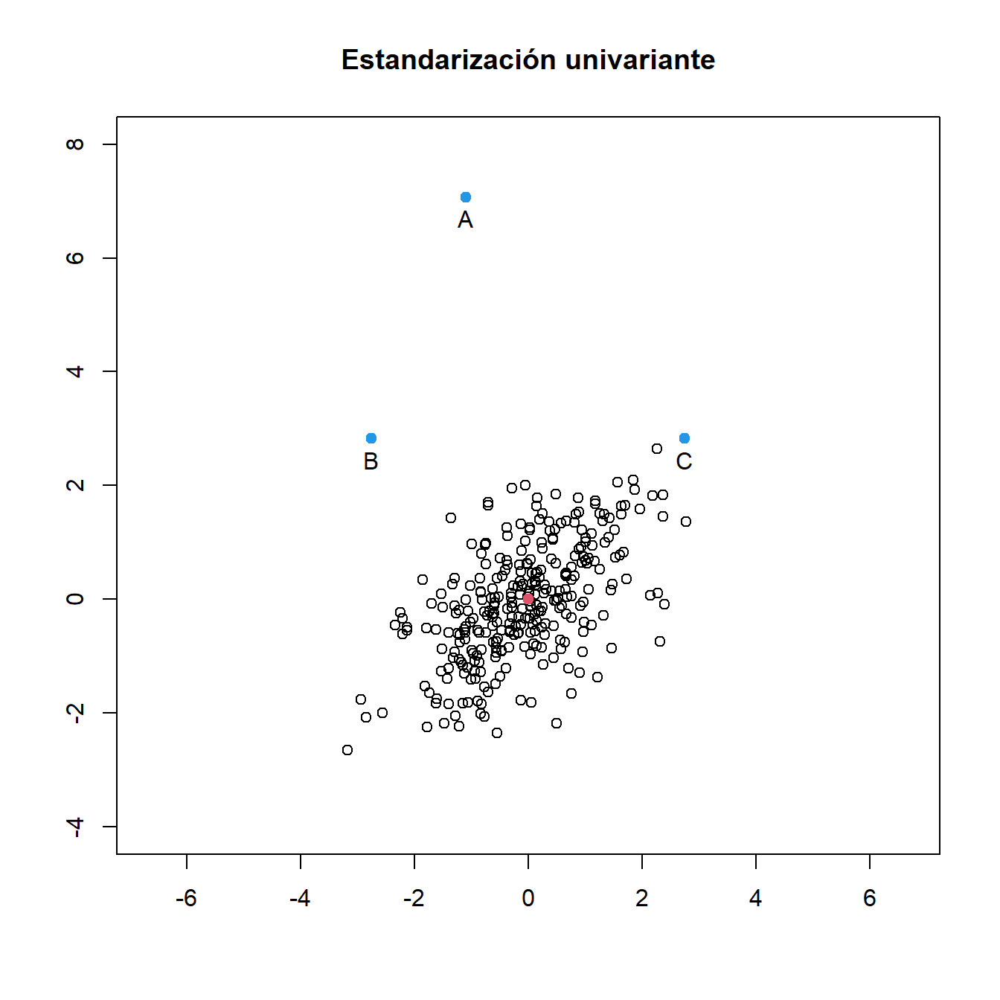
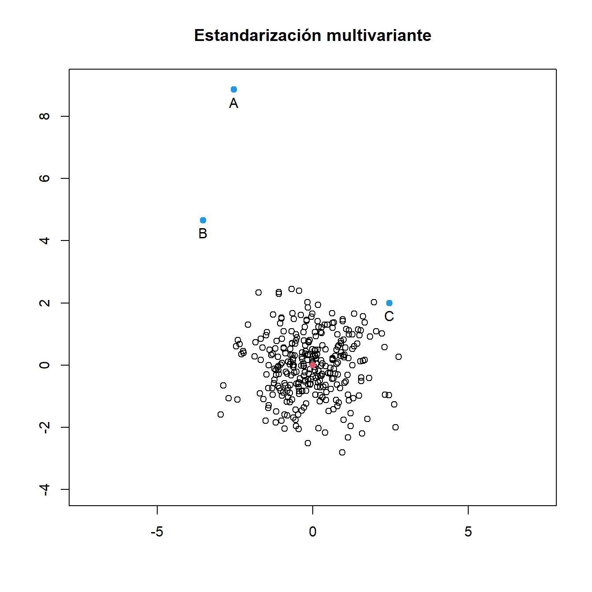

Capítulo1 Introducción al análisis multivariante
Son muchas las situaciones reales en las que necesitamos tener en cuenta varias variables de forma simultánea. Podemos pensar en problemas sencillos en todas las disciplinas en los que necesitemos analizar datos de distintas variables o características medidas sobre los individuos de una muestra. En algunas ocasiones puede resultar adecuado estudiar cada una de las variables de interés de forma individual. Sin embargo, en general las variables están relacionadas entre sí de tal manera que los análisis individuales proporcionan poca información sobre la estructura del conjunto de datos.
Ejemplo. Un estudio pretende analizar diferentes medidas corporales del gorrión pantanero carileonado (Ammodramus caudacutus), una especie de ave que habita en humedales de Norteamérica. Se seleccionan como variables del estudio el sexo, el tamaño de las alas, la longitud del tarso, el tamaño de la cabeza y el peso.
Ejemplo. Para llevar a cabo un estudio sobre lateralidad y aprendizaje se realizó un cuestionario a 237 estudiantes de Estadística de la Universidad de Adelaida. Entre las variables recogidas hay variables cualitativas (como el sexo, mano con la que escribe, etc.) y variables cuantitativas (anchura de la mano con la que escribe, anchura de la mano con la que no escribe, etc.).
Ejemplo. El conjunto de datos de iris de Fisher’s es un conjunto de datos clásico que recoge la medida en cm. de las variables longitud y anchura de sépalo y longitud y anchura de pétalo para flores de tres especies diferentes de iris (iris setosa, versicolor y virginica).
Se puede definir el análisis multivariante como el conjunto de métodos estadísticos que permiten analizar datos que surgen cuando se miden distintas variables en cada uno de los individuos de una o varias muestras. Los avances en informática y en el procesamiento de grandes bancos de datos ha favorecido el desarrollo del análisis multivariante en muchas disciplinas. Si bien tradicionalmente el análisis multivariante se aplicaba fundamentalmente en Biología, en la actualidad son muchos los campos de aplicación. Las técnicas de análisis multivariante incluyen tanto métodos puramente descriptivos que tienen por objetivo extraer información de los datos disponibles, como métodos de inferencia que, a través de la construcción de modelos, pretenden obtener conclusiones sobre la población que ha generado los datos. A continuación describimos algunos de los métodos de análisis multivariante que podemos llevar a cabo cuando disponemos de medidas de un conjunto de variables.
- Contrastar la hipótesis de que las medias de las variables analizadas tienen un valor específico (inferencia sobre la media en poblaciones multivariantes).
- Contrastar la hipótesis de que las variables son incorreladas y tienen varianza común (inferencia sobre la matriz de covarianzas).
- Representar la información mediante un número menor de variables construidas como combinaciones lineales de las originales y que expliquen la mayor parte de la variabilidad original (análisis de componentes principales).
- Encontrar un modelo que nos permita predecir un grupo de variables del conjunto original a partir de otro grupo de variables (modelos de regresión multivariante).
- Comparar las medias de las variables en dos poblaciones (test de Hotelling).
- Comparar las medias de las variables en más de dos poblaciones (MANOVA).
- Si los individuos pertenecen a diferentes grupos, encontrar la combinación lineal de las variables que mejor separe dichos grupos (análisis discriminante).
- Clasificar a un conjunto de observaciones en grupos homogéneos (técnicas de formación de grupos).
1.1 Notación de vectores y matrices
Como hemos comentado, la información de partida en análisis multivariante es un conjunto de datos correspondiente a distintas variables medidas en los elementos de una muestra. Las observaciones correspondientes a cada individuo vendrán dadas por un vector y el conjunto de observaciones de la muestra por una matriz. Por lo tanto, la manipulación de datos multivariantes se simplificará mucho utilizando conceptos de matrices y sus propiedades.
Representamos el vector1 \(\bm{x}\in\mathbb{R}^d\) como el vector columna \(d\times 1\).
\[\bm{x}=\left(\begin{array}{c}x_1\\ x_2\\ \vdots \\ x_d \end{array}\right).\]
El vector \(d\times 1\) con todas sus componentes iguales a uno se denotará como \(\bm{1_d}\). Representamos la matriz \(\bm{A}=(a_{ij})\) de tamaño \(m\times n\) como
\[\bm{A}=\left(\begin{array}{cccc}a_{11}&a_{12}&\ldots&a_{1n}\\ a_{21}&a_{22}&\ldots&a_{2n}\\ \vdots&\vdots&\ddots&\vdots\\ a_{m1}&a_{m2}&\ldots&a_{mn}\end{array}\right).\]
La traspuesta de \(\bm{A}\) se denota \(\bm{A}^\prime{}\). Si \(\bm{A}\) es una matriz cuadrada, su determinante se denota \(\left|\bm{A}\right|\) y su traza \(\textnormal{tr}(\bm{A})\). Si \(\bm{A}\) es no singular (\(\left|\bm{A}\right|\neq 0\)), su inversa se denota como \(\bm{A^{-1}}\). La matriz \(n\times n\) con elementos \(d_1,\ldots, d_n\) en la diagonal y ceros fuera de ella se denota \(\textnormal{diag}(d_1,\ldots,d_n).\) La matriz identidad \(n\times n\) se denota \(\bm{I_n}\). En el Anexo B encontrarás algunos de los resultados fundamentales de álgebra lineal, que nos servirán de ayuda en los próximos capítulos.
1.2 Vectores aleatorios
Un vector aleatorio \(d\)-dimensional \(\bm{x}\in\mathbb{R}^d\) es una colección de variables aleatorias \(\bm{x}=(x_1,\ldots,x_d)^\prime{}\) medidas simultáneamente sobre el mismo individuo.
Ejemplo. En el estudio del gorrión pantanero carileonado (Ammodramus caudacutus), podemos considerar el vector aleatorio \(5\)-dimensional \(\bm{x}=(x_1,\ldots,x_5)^\prime{}\) , siendo:
\(x_1\)= Sexo.
\(x_2\)= Tamaño del ala.
\(x_3\)= Longitud del tarso.
\(x_4\)= Tamaño de cabeza.
\(x_5\)= Peso.
Cada una de las componentes de un vector aleatorio es una variable aleatoria y, por lo tanto, se puede calcular su media, su varianza y su distribución. Sin embargo, hay algunas propiedades conjuntas, como son la covarianza o la distribución conjunta que reflejan la relación entre las variables que forman el vector. Las medidas más importantes de las distribuciones de probabilidad de vectores aleatorios son el vector de medias \(\bm\mu\) y la matriz de covarianzas \(\bm\Sigma\).
Dado un vector aleatorio \(d\)-dimensional \(\bm{x}\in\mathbb{R}^d\), se define el vector de medias como
\[{\bm{\mu}}=E({\bm{x}})=\left(\begin{array}{c}E(x_1)\\ \vdots \\ E(x_d) \end{array}\right).\]
Es decir, el vector de medias \(\bm\mu\) es el vector cuyas componentes son las esperanzas, o medias, de las componentes del vector aleatorio.
La generalización de la varianza unidimensional al contexto multivariante nos lleva a la definición de matriz de covarianzas. Dado un vector aleatorio \(\bm{x}\in\mathbb{R}^d\) con vector de medias \(\bm\mu\), se define la matriz de covarianzas \(\bm\Sigma\) como
\[\label{Sigma} \bm\Sigma=E((\bm{x}-\bm\mu)(\bm{x}-\bm\mu)^\prime{}).\]
Así definida, la matriz de covarianzas \(\bm\Sigma\) es una matriz de dimensión \(d\times d\), simétrica y semidefinida positiva. Podemos comprobar que además los elementos de la diagonal son las varianzas de cada una de las componentes del vector aleatorio y en cada entrada \((j,k)\) se tiene la covarianza entre las variables \(x_j\) y \(x_k\),
\[\textnormal{Cov}(x_j,x_k)=\sigma_{jk}=E((x_j-E(x_j))(x_k-E(x_k))).\]
Fíjate que
\[\textnormal{Cov}(x_j,x_j)=\sigma_{jj}=E((x_j-E(x_j))^2)\] representa la varianza de la variable \(x_j\), que denotaremos también como \(\sigma_j^2\).En resumen,
\[\bm\Sigma=\left(\begin{array}{cccc}\textnormal{Var}(x_1)&\textnormal{Cov}(x_1,x_2)&\ldots&\textnormal{Cov}(x_1,x_d)\\ \textnormal{Cov}(x_2,x_1)&\textnormal{Var}(x_2)&\ldots&\textnormal{Cov}(x_2,x_d)\\ \vdots&\vdots&\ddots&\vdots\\ \textnormal{Cov}(x_d,x_1)&\textnormal{Cov}(x_d,x_2)&\ldots&\textnormal{Var}(x_d)\end{array}\right)=\left(\begin{array}{cccc}\sigma_1^2&\sigma_{12}&\ldots&\sigma_{1d}\\ \sigma_{21}&\sigma_{2}^2&\ldots&\sigma_{2d}\\ \vdots&\vdots&\ddots&\vdots\\ \sigma_{d1}&\sigma_{d2}&\ldots&\sigma_{d}^2\end{array}\right).\]
Puedes también demostrar como ejercicio que \(\bm\Sigma\) puede ser expresada como
\[\bm\Sigma=E(\bm{x}\bm{x}^\prime)-\bm\mu\bm\mu^\prime.\]
Es difícil comparar covarianzas entre pares de variables ya que estas dependen de la escala de medida. Para obtener una medida de la relación lineal entre pares de variables que sea invariante ante cambios de escala podemos estandarizar la covarianza dividiendo por el producto de desviaciones típicas de las variables involucradas. Esta covarianza estandarizada es lo que se denomina correlación. Así, la correlación entre las variables \(x_i\) y \(x_j\) se calcula como
\[\rho_{ij}=\frac{\sigma_{ij}}{\sigma_i\sigma_j}.\]
La matriz de correlaciones será por lo tanto
\[\bm\rho=\left(\begin{array}{cccc}1&\rho_{12}&\ldots&\rho_{1d}\\ \rho_{21}&1&\ldots&\rho_{2d}\\ \vdots&\vdots&\ddots&\vdots\\ \rho_{d1}&\rho_{d2}&\ldots&1\end{array}\right).\]
Se verifica
\[\bm\rho=\bm{D_\Sigma}^{-1}\bm{\Sigma}\bm{D_\Sigma}^{-1}\] siendo \(\bm{D_\Sigma}\) la matriz diagonal de orden \(d\) construida colocando en la diagonal principal las desviaciones típicas de las variables, es decir, \(\bm{D_\Sigma}=\textnormal{diag}(\sigma_1,\ldots,\sigma_d)\). Equivalentemente,
\[\bm{\Sigma}=\bm{D_\Sigma}\bm\rho\bm{D_\Sigma}.\]
1.3 Representación de datos multivariantes
En el contexto multivariante es conveniente representar las variables aleatorias (o sus valores) en forma matricial. Supongamos que hemos observado \(d\) variables en un conjunto de \(n\) elementos. Cada una de estas \(d\) variables es una variable univariante y el conjunto de las \(d\) variables constituye un vector aleatorio. Los valores del vector aleatorio en cada uno de los \(n\) elementos pueden representarse mediante una matriz de datos \(\bm{X}\) de tamaño \(n\times d\) de manera que \(\bm{X}=(x_{ij})\), donde el índice \(i=1\ldots,n\) representa el individuo y el índice \(j =1,\ldots,d\) representa la variable. Es decir, cada fila de la matriz representa el valor del vector aleatorio (formado por las \(d\) variables) sobre el individuo \(i\).
\[\bm{X}=\left(\begin{array}{cccc}x_{11}&x_{12}&\ldots&x_{1d}\\ x_{21}&x_{22}&\ldots&x_{2d}\\ \vdots&\vdots&\ddots&\vdots\\ x_{n1}&x_{n2}&\ldots&x_{nd}\end{array}\right)=\left(\begin{array}{c}\bm{x_1}^\prime{}\\ \bm{x_2}^\prime{}\\ \vdots \\ \bm{x_n}^\prime{} \end{array}\right).\]
Ejemplo. Se analizaron las variables del estudio del gorrión pantanero carileonado en una muestra de 979 gorriones de dicha especie.
Los datos se encuentran recogidos en el fichero gorrion.txt y se
pueden leer en R como se muestra a continuación.
> gorrion <- read.table("data/gorrion.txt", header = TRUE)
> gorrion
Sex Wingcrd Tarsus Head Wt
1 Male 58.0 21.7 32.7 20.3
2 Female 56.5 21.1 31.4 17.4
3 Male 59.0 21.0 33.3 21.0
4 Male 59.0 21.3 32.5 21.0
...El conjunto de datos se puede representar mediante una matriz de 979 filas (número de individuos en la muestra) y 5 columnas (número de variables).
El objeto utilizado en R para almacenar datos de este tipo es un
data.frame. Podremos editar los datos fácilmente utilizando el comando fix o
edit.
A continuación se muestra parte de uno de los muchos conjuntos de datos
multivariantes que puedes encontrar en R. Se trata del conjunto de datos
survey (librería MASS).
Ejemplo. El conjunto de datos survey (librería MASS) corresponde a
un cuestionario que se realizó a 237 estudiantes de Estadística de la
Universidad de Adelaida. Entre las variables recogidas hay variables
cualitativas (como el sexo, mano con la que escribe, etc.) y variables
cuantitativas (anchura de la mano con la que escribe, anchura de la mano
con la que no escribe, etc.) Puedes consultar más información sobre este
conjunto de datos escribiendo help(survey) en la consola de comandos.
> library(MASS)
> data(survey)
> survey
Sex Wr.Hnd NW.Hnd W.Hnd Fold Pulse Clap Exer Smoke Height M.I
1 Female 18.5 18.0 Right R on L 92 Left Some Never 173.00 Metric
2 Male 19.5 20.5 Left R on L 104 Left None Regul 177.80 Imperial
3 Male 18.0 13.3 Right L on R 87 Neither None Occas NA <NA>
4 Male 18.8 18.9 Right R on L NA Neither None Never 160.00 Metric
5 Male 20.0 20.0 Right Neither 35 Right Some Never 165.00 Metric
6 Female 18.0 17.7 Right L on R 64 Right Some Never 172.72 Imperial
7 Male 17.7 17.7 Right L on R 83 Right Freq Never 182.88 Imperial
8 Female 17.0 17.3 Right R on L 74 Right Freq Never 157.00 Metric
9 Male 20.0 19.5 Right R on L 72 Right Some Never 175.00 Metric
...1.3.1 Visualización de datos multivariantes
Uno de los problemas con que nos encontramos a la hora de establecer métodos gráficos para describir datos multivariantes es nuestro propio sistema de percepción visual. Los gráficos de dispersión en dos dimensiones son fáciles de entender. Somos también capaces de interpretar gráficos de dispersión en tres dimensiones. Sin embargo, cuando la dimensión es mayor necesitamos otros procedimientos para visualizar los datos.
Ejemplo. Diagrama de dispersión para los datos de tamaño del ala
(Wingcrd), longitud de tarso (Tarsus) y tamaño de la cabeza (Head) de
gorrión. La función scatterplot3d de la librería scatterplot3d R
permite hacer un gráfico como el que se muestra en la Figura 1.1
> library(scatterplot3d)
> scatterplot3d(gorrion[, 2:4], color = 4, main = "Diagrama de dispersión 3D.")
Figura 1.1: Diagrama de dispersión 3D.
También se pueden crear diagramas de dispersión en 3D interactivos
usando al función plot3d de la librería rgl, como se indica a
continuación:
Una forma de representar datos multivariantes es mediante matrices de diagramas de dispersión. Se construye una cuadrícula con tantas filas y columnas como variables. En cada casilla se representa el diagrama de dispersión de las variables de la fila y columna correspondientes. Este gráfico informa por lo tanto de cómo son las relaciones entre variables, pero sólo dos a dos. En la Figura 1.2 se muestran matrices de diagramas de dispersión para los datos de gorrión.
Ejemplo. Matrices de diagramas de dispersión para los datos de
gorrión. La función pairs de R permite hacer un gráfico como el que se
muestra en la izquierda.
La función scatterplotMatrix de la librería car permite además
añadir en la diagonal los histogramas, boxplots, estimadores de la
densidad, etc. de las variables del conjunto de datos. También permite
añadir en cada gráfico el ajuste de regresión lineal o no paramétrico
para cada par de variables. Consulta la ayuda de la función para obtener
más información.
> pairs(gorrion[, 2:5])
> library(car)
> scatterplotMatrix(gorrion[, 2:5], diagonal = list(method = "histogram", breaks = "FD"),
+ smooth = FALSE, regLine = TRUE)

Figura 1.2: Matrices de diagramas de dispersión para los datos de gorrión.
Cuando en un conjunto de datos tenemos diferentes variables categóricas,
puede ser interesante visualizar las relaciones entre pares de variables
teniendo en cuenta los distintos factores de las variables categóricas.
Podemos en este caso representar gráficos de dispersión
condicionales como el que se muestra en la Figura 1.3 para
los datos survey.
Ejemplo. Gráfico de dispersión condicional para los datos survey.
La función coplot nos permite visualizar la relación entre el ancho de
la mano con la que se escribe (variable Wr.Hnd) y el ancho de la mano
con la que no se escribe (variable NW.Hnd), en función del sexo
(variable Sex) y de la lateralidad (variable W.Hnd) del individuo.

Figura 1.3: Gráfico de dispersión condicional para los datos de lateralidad.
Otra herramienta utilizada para representar datos multivariantes son los gráficos de estrellas. Cada individuo se representa en una estrella, con tantos rayos o ejes como variables queramos representar. Cada eje representa el valor de la variable re-escalada de manera independiente entre variables. Se muestra en la Figura 1.4 el gráfico de estrellas para los datos de iris. A la vista de los gráficos de estrella podemos identificar perfectamente las diferentes especies de iris, representadas a su vez con distintos colores. Como conclusión, parece que las medidas consideradas (longitud y anchura de pétalo y sépalo) nos servirían para distinguir unas especies de otras.
Ejemplo. Gráfico de estrellas para los datos iris obtenido con la
función stars de R. Cada estrella representa una flor.

Figura 1.4: Gráfico de estrellas para los datos de iris.
También es común representar datos multivariantes mediante gráficos de caras de Chernoff. El gráfico de caras de Chernoff es como un gráfico de estrellas, pero cada individuo ahora se representa en una cara y las variables en los rasgos físicos (altura y anchura de la cara, forma de la cara, altura y anchura de la boca, curva de la sonrisa, altura y anchura de ojos, ...). En la Figura 1.5 se representa el gráfico de caras de Chernoff para un subconjunto de los datos de iris.
Ejemplo. Gráficos de caras de Chernoff para un subconjunto de los
datos iris obtenido con la función faces de la librería aplpack de
R. Cada cara representa una flor. Elegimos 4 flores de cada una de las
especies (setosa, versicolor, virginica).
> library(aplpack)
> faces(iris[c(1:4, 51:54, 101:104), 1:4], face.type = 0)
effect of variables:
modified item Var
"height of face " "Sepal.Length"
"width of face " "Sepal.Width"
"structure of face" "Petal.Length"
"height of mouth " "Petal.Width"
"width of mouth " "Sepal.Length"
"smiling " "Sepal.Width"
"height of eyes " "Petal.Length"
"width of eyes " "Petal.Width"
"height of hair " "Sepal.Length"
"width of hair " "Sepal.Width"
"style of hair " "Petal.Length"
"height of nose " "Petal.Width"
"width of nose " "Sepal.Length"
"width of ear " "Sepal.Width"
"height of ear " "Petal.Length"
Figura 1.5: Gráfico de caras de Chernoff para un subconjunto de los datos de iris.
1.3.2 Vector de medias y matriz de covarianzas muestrales
Supongamos que disponemos de una muestra aleatoria \(\bm{x_1},\ldots, \bm{x_n}\) de un vector aleatorio en \(\mathbb{R}^d\) con media \(\bm\mu\) y matriz de covarianzas \(\bm\Sigma\). De forma análoga al caso univariante, calcularemos el vector de medias muestral como \[\overline{\bm{x}}=\frac{1}{n}\sum_{i=1}^n{\bm{x_i}}=\frac{1}{n}\bm{X}^\prime{}\bm{1_n}.\] Recuerda que, según la notación establecida, \(\bm{x_i}=(x_{i1},\ldots,x_{id})^\prime{}\) y \(\bm{X}\) es la matriz de datos.
Ejemplo. Trabajaremos ahora con variables numéricas del estudio del gorrión pantanero carileonado.
> gmed <- gorrion[, 2:5]
> gmed
Wingcrd Tarsus Head Wt
1 58.0 21.7 32.7 20.3
2 56.5 21.1 31.4 17.4
3 59.0 21.0 33.3 21.0
4 59.0 21.3 32.5 21.0
...Calculamos el vector de medias muestral a partir de la matriz de
observaciones. Podemos hacerlo de varias maneras. A través de la función
summary.
> summary(gmed)
Wingcrd Tarsus Head Wt
Min. :52.00 Min. :18.90 Min. :29.20 Min. :15.60
1st Qu.:56.00 1st Qu.:20.90 1st Qu.:31.50 1st Qu.:19.20
Median :58.00 Median :21.40 Median :31.90 Median :20.20
Mean :57.87 Mean :21.48 Mean :32.04 Mean :20.23
3rd Qu.:59.00 3rd Qu.:21.90 3rd Qu.:32.40 3rd Qu.:21.10
Max. :68.00 Max. :25.40 Max. :35.70 Max. :26.50 A través de la función apply.
A través de la matriz de observaciones.
> n <- dim(gmed)[1]
> un <- matrix(1, nr = n, nc = 1)
> t(gmed) %*% un/n
[,1]
Wingcrd 57.86599
Tarsus 21.47620
Head 32.03790
Wt 20.22646La matriz de covarianzas \(\bm\Sigma\) se estimará mediante
\[\bm{S}=\frac{1}{n}\sum_{i=1}^n\left(\bm{x_i}-\overline{\bm{x}}\right)\left(\bm{x_i}-\overline{\bm{x}}\right)^\prime{}.\] La matriz de covarianzas muestral \(\bm{S}\) es una matriz cuadrada y simétrica que contiene en la diagonal las varianzas muestrales y fuera de la diagonal las covarianzas muestrales entre los distintos pares de variables. Es decir
\[\bm{S}=\left(\begin{array}{cccc}s_1^2&s_{12}&\ldots&s_{1d}\\ s_{21}&s_{2}^2&\ldots&s_{2d}\\ \vdots&\vdots&\ddots&\vdots\\ s_{d1}&s_{d2}&\ldots&s_{d}^2\end{array}\right),\] siendo
\[s_{jk}=\frac{1}{n}\sum_{i=1}^n(x_{ij}-\overline{x}_j)(x_{ik}-\overline{x}_k)\] Las varianzas muestrales \(s_{jj}\) se denotan \(s_j^2\). La matriz de correlaciones muestral \(\bm R\) se obtendrá dividiendo las covarianzas muestrales por las desviaciones típicas de cada par de variables. Es decir,
\[\bm{R}=\left(\begin{array}{cccc}1&r_{12}&\ldots&r_{1d}\\ r_{21}&1&\ldots&r_{2d}\\ \vdots&\vdots&\ddots&\vdots\\ r_{d1}&r_{d2}&\ldots&1\end{array}\right),\] siendo
\[r_{jk}=\frac{s_{jk}}{s_js_k}.\]
De forma análoga al caso poblacional,
\[\bm{R}=\bm{D_S}^{-1}\bm{S}\bm{D_S}^{-1}\] siendo ahora \(\bm{D_S}=\textnormal{diag}(s_1,\ldots,s_d)\), es decir, la matriz diagonal de orden \(d\) construida colocando en la diagonal principal las desviaciones típicas muestrales de las variables. Equivalentemente,
\[\bm{S}=\bm{D_S}\bm{R}\bm{D_S}.\]
Ejemplo. Volvemos al conjunto de datos de iris. Calculamos, para la especie setosa, el vector de medias muestral, la matriz de covarianzas muestral y la matriz de correlaciones muestral. Debemos tener en cuenta que R calcula la matriz de covarianzas muestral corregida \[\frac{1}{n-1}\sum_{i=1}^n\left(\bm{x_i}-\overline{\bm{x}}\right)\left(\bm{x_i}-\overline{\bm{x}}\right)^\prime{}.\]
> setosa <- iris[iris$Species == "setosa", 1:4]
> colMeans(setosa)
Sepal.Length Sepal.Width Petal.Length Petal.Width
5.006 3.428 1.462 0.246
> cov(setosa) # Matriz de covarianzas muestral corregida
Sepal.Length Sepal.Width Petal.Length Petal.Width
Sepal.Length 0.12424898 0.099216327 0.016355102 0.010330612
Sepal.Width 0.09921633 0.143689796 0.011697959 0.009297959
Petal.Length 0.01635510 0.011697959 0.030159184 0.006069388
Petal.Width 0.01033061 0.009297959 0.006069388 0.011106122
> cor(setosa)
Sepal.Length Sepal.Width Petal.Length Petal.Width
Sepal.Length 1.0000000 0.7425467 0.2671758 0.2780984
Sepal.Width 0.7425467 1.0000000 0.1777000 0.2327520
Petal.Length 0.2671758 0.1777000 1.0000000 0.3316300
Petal.Width 0.2780984 0.2327520 0.3316300 1.0000000Comprobamos que la matriz de correlaciones muestral también se puede calcular como \(\bm{R}=\bm{D_S}^{-1}\bm{S}\bm{D_S}^{-1}\).
> desviaciones <- apply(setosa, 2, sd)
> Dinv <- solve(diag(desviaciones))
> Dinv %*% cov(setosa) %*% Dinv
[,1] [,2] [,3] [,4]
[1,] 1.0000000 0.7425467 0.2671758 0.2780984
[2,] 0.7425467 1.0000000 0.1777000 0.2327520
[3,] 0.2671758 0.1777000 1.0000000 0.3316300
[4,] 0.2780984 0.2327520 0.3316300 1.0000000Algunos de los resultados que veremos irán encaminados a la obtención de la distribución de \(\overline{\bm{x}}\) y \(\bm{S}\) en este contexto multidimensional y bajo la hipótesis de normalidad.
1.4 Vector de medias y matrices de covarianzas para subconjuntos de variables
En algunas ocasiones podemos estar interesados en dos o más subconjuntos de variables medidas sobre las mismas unidades muestrales.
Ejemplo. Un estudio sobre diabetes analiza diferentes variables de interés sobre pacientes que no presentan la enfermedad. Las variables de mayor relevancia para el estudio son:
\(x_1\)= Intolerancia a la glucosa
\(x_2\)= Respuesta de la insulina a la glucosa oral
\(x_3\)= Resistencia de la insulina
Se recogen igualmente otras dos variables de menor relevancia:
\(y_1\)= Peso relativo
\(y_2\)= Glucemia basal
Supongamos, como en el ejemplo anterior, que tenemos dividido el vector aleatorio original en dos subvectores \(\bm{y}\) y \(\bm{x}\) con \(p\) y \(q\) variables, respectivamente. Tendremos entonces:
\[E\left(\begin{array}{c}\bm{y}\\ \bm{x}\end{array}\right)=\left(\begin{array}{c}E(\bm{y})\\ E(\bm{x})\end{array}\right)=\left(\begin{array}{c}\bm{\mu_y}\\ \bm{\mu_x}\end{array}\right)\] y
\[\textnormal{Cov}\left(\begin{array}{c}\bm{y}\\ \bm{x}\end{array}\right)=\bm{\Sigma}=\left(\begin{array}{cc}\bm{\Sigma_{yy}}&\bm{\Sigma_{yx}}\\ \bm{\Sigma_{xy}}&\bm{\Sigma_{xx}}\end{array}\right).\]
En las expresiones anteriores \(\left(\begin{array}{c}\bm{y}\\ \bm{x}\end{array}\right)\) denota el vector original de \(p+q\) variables. La submatriz \(\bm{\Sigma_{yy}}\) es la matriz de covarianzas \(p\times p\) del subvector \(\bm{y}\). Del mismo modo, la submatriz \(\bm{\Sigma_{xx}}\) es la matriz de covarianzas \(q\times q\) del subvector \(\bm{x}\). La submatriz \(\bm{\Sigma_{yx}}\) es una matriz \(p\times q\) con las covarianzas de cada variable \(y_j\) con \(x_k\). Nótese que \(\bm{\Sigma_{xy}}=\bm{\Sigma_{yx}}^\prime\).
Estas propiedades a nivel poblacional se trasladan directamente al vector de medias y matriz de covarianzas muestrales. Cada observación en la muestra se podrá particionar de la siguiente manera:
\[\left(\begin{array}{c}\bm{y_i}\\ \bm{x_i}\end{array}\right)=\left(\begin{array}{c} y_{i1}\\ \vdots\\ y_{ip}\\ x_{i1}\\ \vdots\\ x_{iq}\\ \end{array}\right),\ \ i=1,\ldots,n.\]
Para la muestra de \(n\) observaciones, el vector de medias muestral y la matriz de covarianzas muestrales tendrán el siguiente aspecto: \[\left(\begin{array}{c}\overline{\bm{y}}\\ \overline{\bm{x}}\end{array}\right)=\left(\begin{array}{c}\overline{y}_1\\ \vdots\\\overline{y}_p \\\overline{x}_1\\ \vdots\\\overline{x}_q\end{array}\right),\ \ \ \ \ \ \ \ \bm{S}=\left(\begin{array}{cc}\bm{S_{yy}}&\bm{S_{yx}}\\ \bm{S_{xy}}&\bm{S_{xx}}\end{array}\right).\]
Lo visto hasta ahora se puede generalizar de forma natural al caso en que tengamos el vector original dividido en más de dos subvectores.
Ejemplo. Los datos del estudio sobre diabetes se encuentran en el
fichero diabetes.txt.
> diab <- read.table("data/diabetes.txt", header = TRUE)
> head(diab)
y1 y2 x1 x2 x3
1 0.81 80 356 124 55
2 0.95 97 289 117 76
3 0.94 105 319 143 105
4 1.04 90 356 199 108
5 1.00 90 323 240 143
6 0.76 86 381 157 165
> colMeans(diab)
y1 y2 x1 x2 x3
0.9178261 90.4130435 340.8260870 171.3695652 97.7826087
> cov(diab)
y1 y2 x1 x2 x3
y1 0.01618184 0.216029 0.7871691 -0.2138454 2.189072
y2 0.21602899 70.558937 26.2289855 -23.9560386 -20.841546
x1 0.78716908 26.228986 1106.4135266 396.7323671 108.383575
x2 -0.21384541 -23.956039 396.7323671 2381.8826087 1142.637681
x3 2.18907246 -20.841546 108.3835749 1142.6376812 2136.3961351.4.1 Combinaciones lineales de variables
Con frecuencia estamos interesados en combinaciones lineales de las variables de estudio \(x_1,\ldots, x_d\). Sean \(a_1,\ldots,a_d\) constantes y consideremos la combinación lineal
\[z=a_1x_1+\ldots+a_dx_d=\bm{a}^\prime\bm{x},\] donde \(\bm{a}=(a_1,\ldots,a_d)^\prime\). Para la combinación lineal\(z=\bm{a}^\prime\bm{x}\) se tiene que \(E(z)=\bm{a}^\prime E(\bm{x})\) y \(\textnormal{Var}(z)=\bm{a}^\prime\bm\Sigma\bm{a}\).
De forma más general, si consideramos \(k\) combinaciones lineales
\[\bm{z}=\left(\begin{array}{c}z_1\\z_2\\ \vdots\\ z_k\end{array}\right)=\left(\begin{array}{c}a_{11}x_1+\ldots+a_{1d}x_d\\a_{21}x_1+\ldots+a_{2d}x_d\\ \vdots\\ a_{k1}x_1+\ldots+a_{kd}x_d\end{array}\right)=\left(\begin{array}{c}\bm{a_1}^\prime\bm{x}\\\bm{a_2}^\prime\bm{x}\\ \vdots\\ \bm{a_k}^\prime\bm{x}\end{array}\right)=\bm{A}\bm{x},\] entonces \(E(\bm{z})=\bm{A} E(\bm{x})\) y \(\bm{\Sigma_z}=\bm{A}\bm\Sigma\bm{A}^\prime\). Para la transformación más general \(\bm{z}=\bm{A}\bm{x}+\bm{b}\), se tiene \(E(\bm{z})=\bm{A} E(\bm{x})+\bm{b}\) y \(\bm{\Sigma_z}=\bm{A}\bm\Sigma\bm{A}^\prime\).
Consideremos ahora el análogo muestral. Si aplicamos la transformación a todos los elementos de la muestra, es decir, si hacemos \(\bm{z_i}=\bm{A}\bm{x_i}+\bm{b}\) para \(i=1,\ldots, n\), entonces \(\overline{\bm{z}}=\bm{A} \overline{\bm{x}}+\bm{b}\) y \(\bm{S_z}=\bm{A}\bm{S}\bm{A}^\prime\).
Ejemplo. Para el ejemplo del estudio sobre diabetes consideramos las siguientes transformaciones lineales:
\(z_1=x_1+2x_2-x3\)
\(z_2=y_1+4y_2\)
En primer lugar calculamos \(\overline{z}_1\), \(\overline{z}_2\), \(s^2_{z_1}\), \(s^2_{z_2}\) y \(s_{z_1z_2}\) a partir de los datos transformados
> attach(diab)
> z1 <- x1 + 2 * x2 - x3
> z2 <- y1 + 4 * y2
> mean(z1)
[1] 585.7826
> mean(z2)
[1] 362.57
> var(z1)
[1] 9569.952
> var(z2)
[1] 1130.687
> cov(z1, z2)
[1] -5.195778De otro modo, podemos escribir
\[\bm{z}=\left(\begin{array}{c}z_1\\z_2\end{array}\right)=\left(\begin{array}{ccccc}0&0&1&2&-3\\1&4&0&0&0\end{array}\right)\left(\begin{array}{c}y_1\\y_2\\x_1\\x_2\\x_3\end{array}\right)=\bm{A}\left(\begin{array}{c}y_1\\y_2\\x_1\\x_2\\x_3\end{array}\right).\]
Teniendo en cuenta las propiedades de las transformaciones lineales discutidas anteriormente, se tiene también:
1.5 Distancias estadísticas
El concepto de distancia entre objetos o individuos observados permite interpretar geométricamente muchas técnicas de análisis multivariante. En el caso unidimensional, la distancia entre dos puntos \(x\) e \(y\) se mide de manera natural mediante la distancia euclídea \(\left|x-y\right|\).
Cuando disponemos de una variable vectorial, cada dato es un punto en \(\mathbb{R}^d\) y podríamos entonces pensar en utilizar de nuevo la distancia euclídea en el contexto multidimensional. A partir de ahora sean \(\bm{x_i}=(x_{i1},\ldots,x_{id})^\prime{}\) y \(\bm{x_k}=(x_{k1},\ldots,x_{kd})^\prime{}\) las observaciones de dos individuos \(i\), \(k\) obtenidas al medir el vector \(d\)-dimensional \((x_1,\ldots, x_d)^\prime{}\).
1.5.1 Distancia euclídea
Se define la distancia euclídea entre \(\bm{x_i}\) y \(\bm{x_k}\) como
\[d_E(\bm{x_i},\bm{x_k})=\sqrt{\sum_{j=1}^d{(x_{ij}-x_{kj})^2}}.\]
La distancia euclídea es la más utilizada pero tiene como inconvenientes que depende de las unidades de medida de las variables (no es invariante ante cambios de escala) y presupone que las variables son incorrelacionadas y de varianza unidad.
Ejemplo. Supongamos que disponemos de los datos de peso y estatura de 300 mujeres con edades comprendidas entre 30 y 40 años. Queremos determinar la posición con respecto a la media de tres nuevas mujeres a partir de sus respectivos pesos y estaturas. Supongamos que la mujer \(A\) pesa \(63\) kg. y mide \(180\) cm. La mujer \(B\) pesa \(60\) kg. y mide \(177\) cm. La mujer \(C\) pesa \(70\) kg. y mide \(177\) cm. Los datos se muestran en la Figura 1.6
Si bien parece evidente que la posición de las tres mujeres con respecto a la media es diferente (la mujer \(C\) parece más “cercana” a la media que la \(A\) y la \(B\)), la distancia euclídea de todos los puntos a la media es la misma.

Figura 1.6: Peso (en kg.) y estatura (en cm.) de 300 mujeres con edades comprendidas entre 30 y 40 años. En rojo se representa el peso medio y la estatura media. En azul, datos de las mujeres A, B y C.
1.5.2 Distancia euclídea estandarizada por columnas
Una manera de evitar el problema de que la distancia dependa de las unidades de medida de las variables, consiste en dividir cada variable por un término que elimine el efecto de la escala.
Se define la distancia euclídea estandarizada por columnas entre \(\bm{x_i}\) y \(\bm{x_k}\) como
\[d_{Est}(\bm{x_i},\bm{x_k})=\sqrt{\sum_{j=1}^d{\left(\frac{x_{ij}-x_{kj}}{\sigma_j}\right)^2}}.\] Su utilidad radica en que es una forma de determinar la similitud entre dos variables aleatorias multidimensionales invariante ante cambios de escala. Puede verse como una distancia euclídea donde cada coordenada se pondera inversamente proporcional a la varianza.
Tiene como inconvenientes que presupone que las variables son incorrelacionadas.
Ejemplo. En el ejemplo anterior de los datos de peso y estatura de 300 mujeres, la distancia euclídea estandarizada por columnas de la mujer \(A\) a la media es mayor que la distancia euclídea estandarizada por columnas de las mujeres \(B\) y \(C\) a la media. Aun así, la distancia euclídea estandarizada por columnas de las mujeres \(B\) y \(C\) a la media es la misma.
1.5.3 Distancia de Mahalanobis
Se define la distancia de Mahalanobis entre \(\bm{x_i}\) y \(\bm{x_k}\) como
\[d_M(\bm{x_i},\bm{x_k})=\sqrt{(\bm{x_i}-\bm{x_k})^\prime{}\bm\Sigma^{-1}(\bm{x_i}-\bm{x_k})}.\]
Geométricamente equivale a girar la nube de puntos hasta eliminar las correlaciones y luego calcular la distancia para los datos estandarizados. Es adecuada como medida de discrepancia entre datos, porque es invariante ante cambios de escala y tiene en cuenta las correlaciones entre las variables.
Además,
\(d_M\equiv d_E\) cuando \(\bm\Sigma=\bm{I_d}\).
\(d_M\equiv d_{Est}\) cuando \(\bm\Sigma=\textnormal{diag}(\sigma_1^2,\ldots,\sigma_d^2)\).
En caso de que la matriz de covarianzas sea desconocida se calcula
\[d_M(\bm{x_i},\bm{x_k})=\sqrt{(\bm{x_i}-\bm{x_k})^\prime{}\bm{S}^{-1}(\bm{x_i}-\bm{x_k})}.\]
Ejemplo. En el ejemplo anterior de los datos de peso y estatura de 300 mujeres, la distancia de Mahalanobis de la mujer \(A\) a la media es mayor que la distancia de Mahalanobis de la mujer \(B\) a la media, que a su vez es mayor que la distancia de Mahalanobis de la mujer \(C\) a la media.
1.5.4 Estandarización
Una transformación lineal que tiene un interés especial es la estandarización. La estandarización (o tipificación) de una variable aleatoria se consigue restando la media y dividiendo por la desviación típica (raíz cuadrada de la varianza). De esta manera se consigue que la nueva variable transformada tenga media cero y varianza uno.
En el caso de un vector aleatorio de dimensión \(d\), con \(d\) mayor que uno, podemos pensar en estandarizar cada una de sus variables. Como resultado de esta estandarización univariante se obtiene un vector cuyas componentes tienen todas media cero y desviación típica uno. Sin embargo, puede haber correlación entre las variables que componen el vector.
Ejemplo. En la Figura 1.7 se muestran dos diagramas de dispersión para los datos de peso y estatura de mujeres. El primero de ellos representa los datos tras haber estandarizado de manera univariante las dos variables. Esto hace que se hayan contraído los ejes. Se mantiene la correlación positiva, aunque la orientación de la nube de puntos ahora es más próxima a la diagonal, pues ambas variables tienen la misma dispersión.
El segundo gráfico muestra el diagrama de dispersión de los datos tras haberles aplicado una estandarización bivariante.


Figura 1.7: Estandarización univariante y multivariante
La estandarización multivariante se obtiene así:
\[\bm{y}=\bm{\Sigma^{-1/2}}(\bm{x}-\bm\mu)\] donde \(\bm\mu\) denota el vector de medias, \(\bm\Sigma\) es la matriz de covarianzas y \(\bm{\Sigma^{-1/2}}\) es una matriz \(d\times d\) que definiremos más adelante. Por las propiedades vistas en la sección anterior, se puede comprobar que:
El vector estandarizado tiene media cero:
\[E(\bm{y})=E(\bm{\Sigma^{-1/2}}(\bm{x}-\bm\mu))=\bm{\Sigma^{-1/2}}E(\bm{x}-\bm\mu)=0.\]
La matriz de covarianzas de \(\bm{y}\) es la matriz identidad \(d\times d\), \(\bm{I_d}\):
\[\mbox{Cov}(\bm{y},\bm{y})=\mbox{Cov}(\bm{\Sigma^{-1/2}}(\bm{x}-\bm\mu),\bm{\Sigma^{-1/2}}(\bm{x}-\bm\mu))=\bm{\Sigma^{-1/2}}\mbox{Cov}(\bm{x},\bm{x})(\bm{\Sigma^{-1/2}})^\prime{} \stackrel{(a)}{=}\bm{I_d}.\]
Para obtener la matriz \(\bm{\Sigma^{-1/2}}\), de manera que se cumpla la igualdad (a) en el cálculo anterior de la matriz de covarianzas, tendremos presente que toda matriz de covarianzas es una matriz simétrica y semidefinida positiva. Así, se le puede aplicar la descomposición en autovalores y autovectores, que vemos a continuación.
Si \(\bm{A}\) es una matriz simétrica, entonces
\[\bm{A}=\left(\bm{v_1},\ldots,\bm{v_d}\right)\left(\begin{array}{ccc} \lambda_1 & & 0 \\ & \ddots & \\ 0 & & \lambda_d \end{array}\right)\left(\begin{array}{c} \bm{v_1}^{\prime} \\ \vdots \\ \bm{v_d}^{\prime} \end{array}\right)\] siendo \(\bm{v_1},\ldots,\bm{v_d}\) una base ortonormal de autovectores de \(\bm{A}\) y \(\lambda_1,\ldots,\lambda_d\) sus autovalores asociados. \(\bm{A}\) se dice definida positiva si todos los autovalores de \(\bm{A}\) son positivos. En ese caso se puede emplear para definir una norma (y una distancia): \(\|\bm{x}\|^2=\bm{x}'\bm{A}\bm{x}\).
Entonces, se puede obtener \(\bm{\Sigma^{-1/2}}\) a partir de los autovalores y autovectores de \(\bm\Sigma\), de la siguiente manera:
\[{\bm{\Sigma^{-1/2}}}=\left(\bm{v_1},\ldots,\bm{v_d}\right)\left(\begin{array}{ccc} 1/\sqrt{\lambda_1} & & 0 \\ & \ddots & \\ 0 & & 1/\sqrt{\lambda_d} \end{array}\right)\left(\begin{array}{c} \bm{v_1}^{\prime} \\ \vdots \\ \bm{v_d}^{\prime} \end{array}\right).\]
Como es habitual en la literatura de análisis multivariante y para evitar confusión entre escalares, vectores y matrices, denotaremos los vectores con letras minúsculas en negrita y las matrices con letras mayúsculas en negrita. Según esta notación, tanto variables aleatorias como sus valores observados se representarán mediante letras minúsculas.↩︎